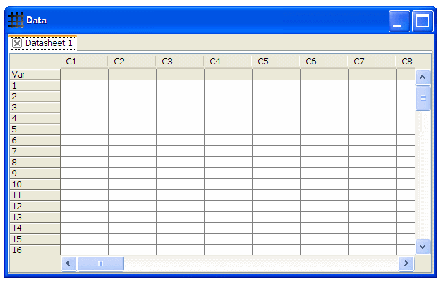

The Datasheet Window contains Datasheets where you can enter data. A Datasheet takes the form of a spreadsheet and is placed within a tab. By default, a Datasheet has 300 rows (1, 2, …, 300) and 50 columns (C1, C2, …, C50).
The variable row of the table is for the variable names of the columns. Variables names cannot contain characters ' and ", and they cannot be the same for different columns.
A cell in a datasheet can contain both text and numbers. Numbers in data cells are internally stored as double-precision 64-bit IEEE 754 floating point values, even though they are displayed to at most 6 decimal places. The tooltip of a cell shows the precise value stored in a cell.
To add a new Datasheet to the Datasheet window, select File > New Datasheet.
A Datasheet can be saved in the following formats:
To save a Datasheet, make sure it is active (by selecting its corresponding tab) and select File > Save Current Datasheet…. In the save file dialog, enter the filename and choose the desired file format. To save the current Datasheet as a different file, use File > Save Current Datasheet As….
To open a saved Datasheet or import data from a file, select File > Open Datasheet. The following file formats are supported:
Before closing a Datasheet, make sure it is the current Datasheet by selecting its corresponding tab. You can close a Datasheet by one of the following two ways:
You will be given the option to save the Datasheet before closing it if there is any unsaved data.
To print a Datasheet or export data to a file, select File > Print/Export Datasheet. In the print Datasheet dialog, select the desired print area:
Enter in the given text boxes the desired header and footer to be printed. Press Print to continue the printing or exporting process.
A Print Preview window will appear. Use the File Menu to export data to the following formats: